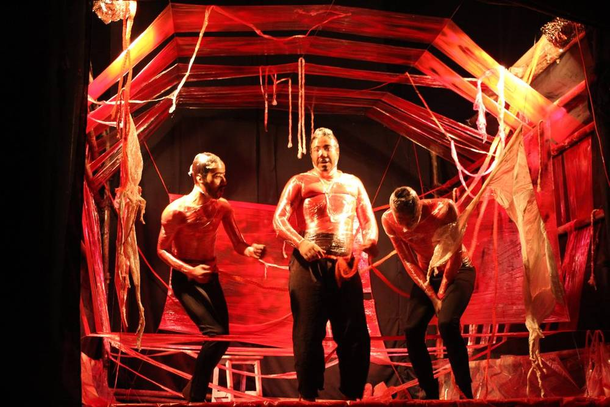
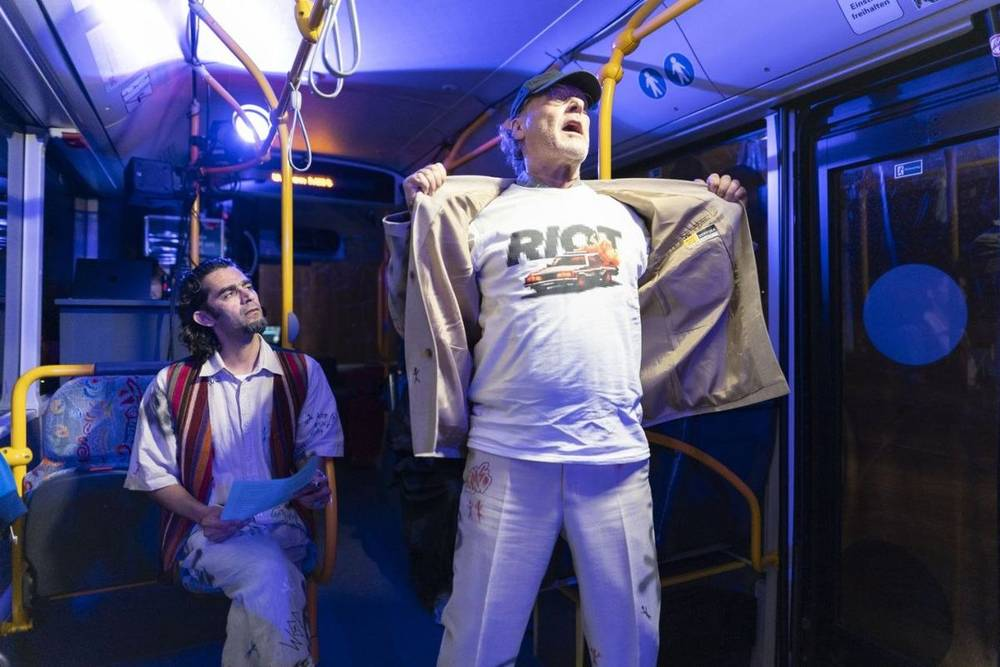
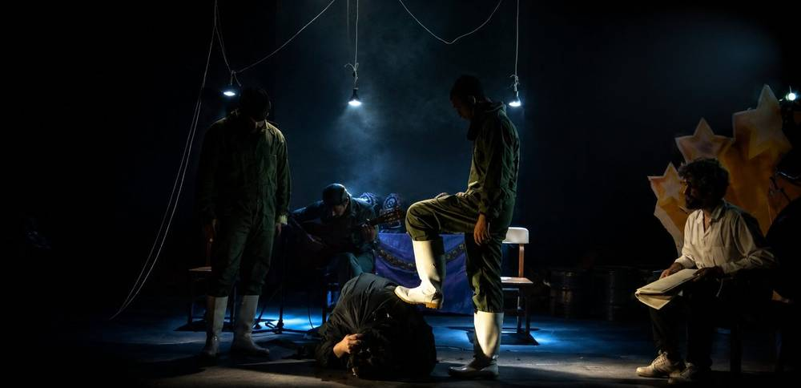
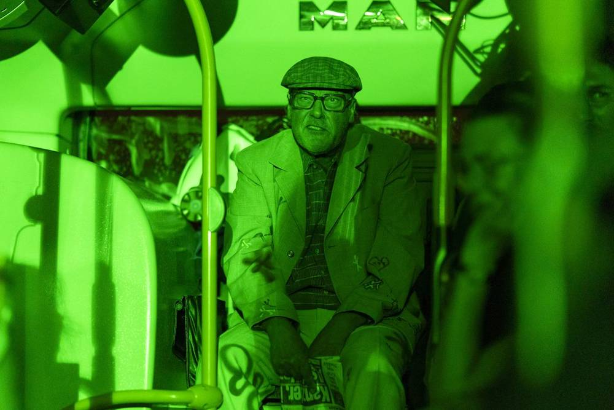
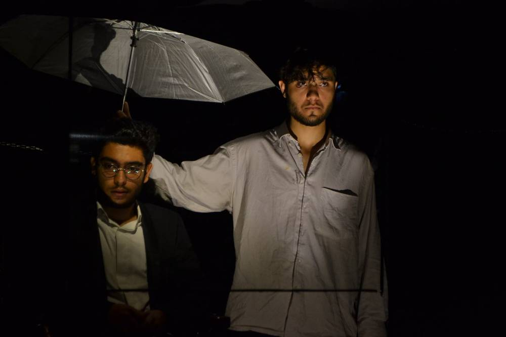

1998 — 2011
Graphic design, Tehran
Allgemeine Hochschulreife at a vocational Gymnasium for Graphic & Design, then studies in Graphic & Design at Azad University Tehran.





From the underground stages of Mashhad to the municipal theatres of Germany — work that moves between censorship and freedom, shadow and presence, scream and silence.
A director whose stage was once the only place where the leopard could still roar. After arrest and exile in 2019, the work continued — in asylum-centre workshops, in Halle, at Stadttheater Gießen, and now as a freelance Regisseur across Europe.
Drag / scroll →
Click to open gallery
Camera, edit and direction for theatres, artists and festivals — from Bühnen Halle to Stadttheater Gießen and Tafelhalle Nürnberg.
Izad Safaeiyan wurde in Mashhad im Iran geboren. Er ist Theaterregisseur und Bühnenbildner für Schauspiel. Seine künstlerische Laufbahn begann er mit einem Schauspiel-Studium in Mashhad. Er realisierte mehrfach ausgezeichnete Inszenierungen in Städten wie Dargaz, Mashhad, Neyshabur, Quchan, Torbat Heydariyeh und Kashmar sowie Halle an der Saale.
Seine künstlerische Arbeit ist geprägt von einer kritischen Auseinandersetzung mit sozialen und politischen Themen, was im Jahr 2019 zur Flucht aus seiner Heimat führte. Seitdem lebt Safaeiyan in Deutschland und arbeitet als freier Regisseur, Regieassistent und Abendspielleiter.
Official profile ↗Allgemeine Hochschulreife at a vocational Gymnasium for Graphic & Design, then studies in Graphic & Design at Azad University Tehran.
Acting studies in Mashhad. First theatre work with the Lal Theatre Group under Farshid Tamri.
Director and theatre intendant at Dargaz Municipal Theatre, acting teacher. Nine full productions and three short works — and twelve-plus festival awards across Khorasan.
After the single performance of Tiger, an arrest and the decision to leave Iran. The stage had become too dangerous to stand on.
Theatre workshops in the Halberstadt asylum centre. Founded a theatre group in Halle an der Saale; Regieassistenz at Bühnen Halle; film work for Saale Tumult and Oper Halle.
Ensemble staff for season 24/25 — Regieassistenz, Abendspielleitung and trailers. Directing debut in Germany: Etwas kommt mir bekannt vor.
Freelance director. Hazfīyāt, Frankfurt — premiere 04.09.2026. Regieassistenz on the film production FIREKEEPER.
“The stage was the only place where the leopard could still roar — until it wasn’t.”
— On Tiger, Dargaz 2019
Available for directing projects, residencies and collaborations — across Europe and internationally.
Let’s make theatre ↗